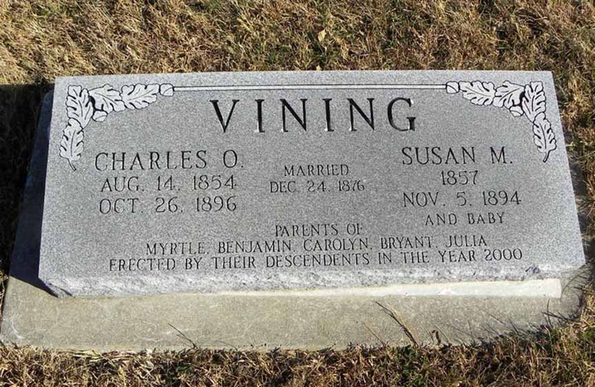
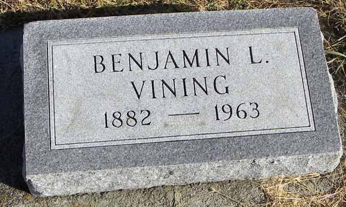

Census Data
| 1880 | 1890 | 1900 | 1910 | 1920 | 1930 | |
| Charles Oliver Vining | 25 | ? | dead | |||
| Susan M. (Noland) Vining | 23 | ? | dead | |||
| Myrtle M. Vining | 2 | ? | 22 [see note below] |
|||
| Benjamin Leland Vining | ? | 17 [see note below] |
? | ? | ? | |
| Carolyn Daisy Vining | ? | ? | married and living in separate household | |||
| Bryant Oliver Vining | ? | 12 [see note below] |
married and living in separate household | |||
| Julia Vining | living? in separate household | |||||
| infant Vining | dead [see note below] |


Death Data
Headstone of Charles Oliver Vining and Susan M. Noland, in Corning Cemetery, Corning, Kansas: (source: Find A Grave)
